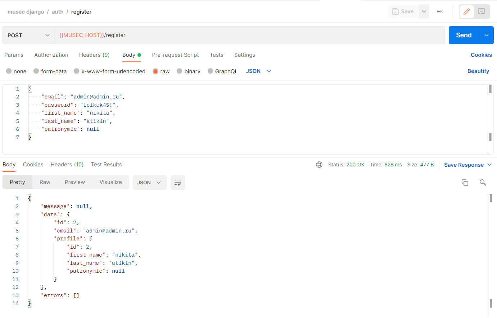
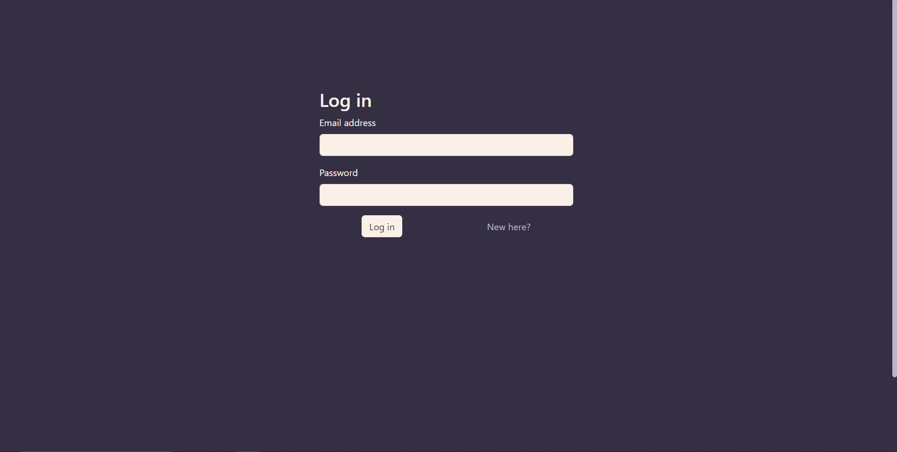
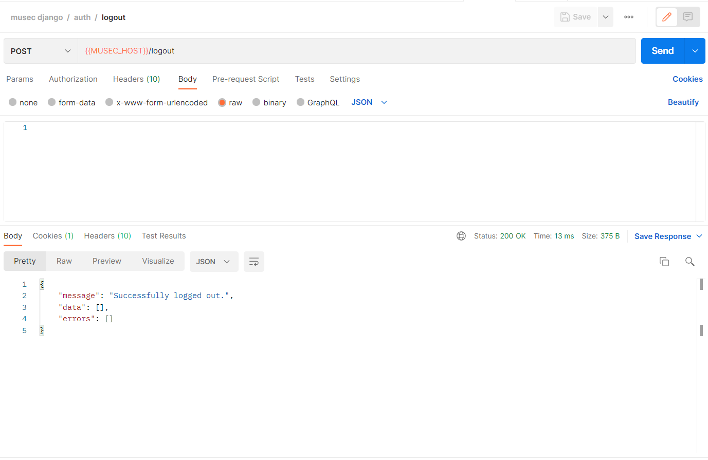
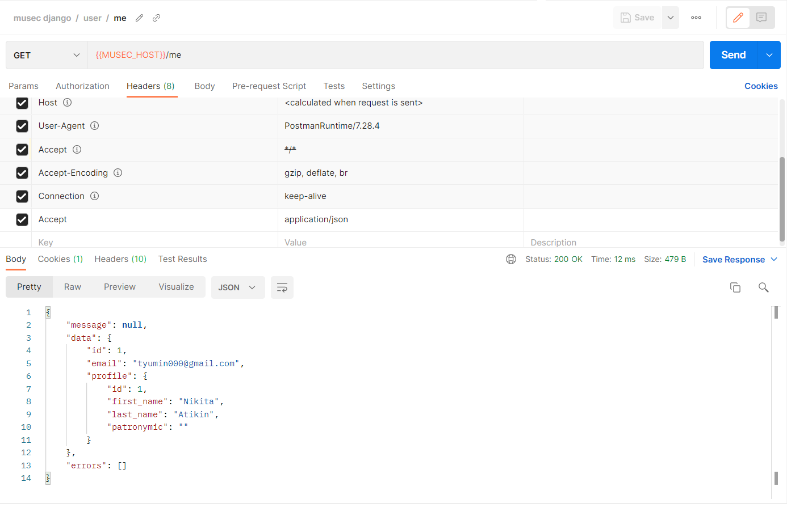
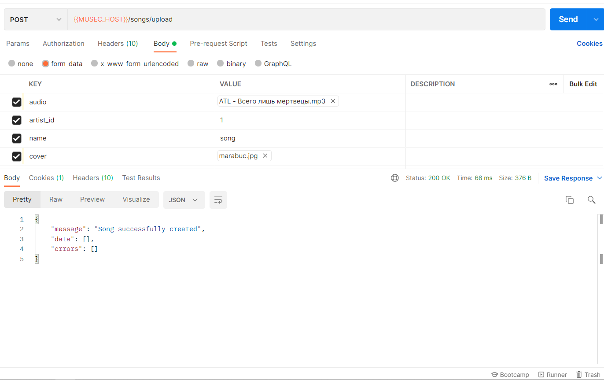
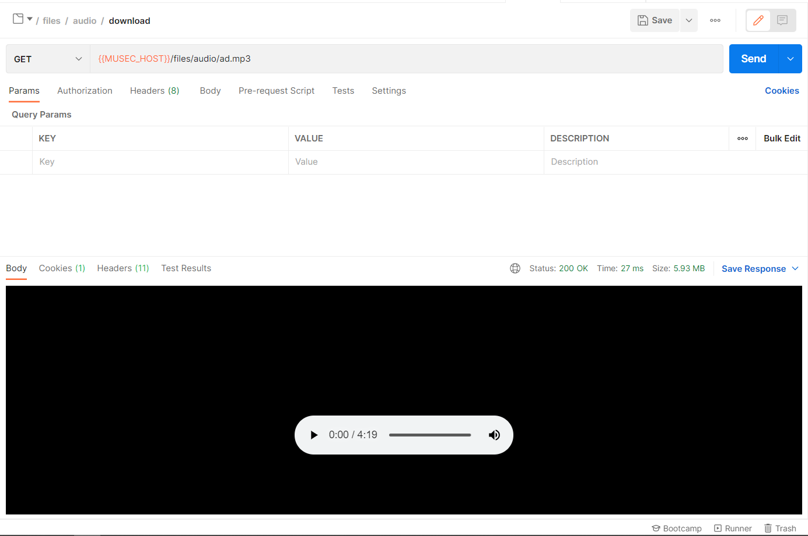
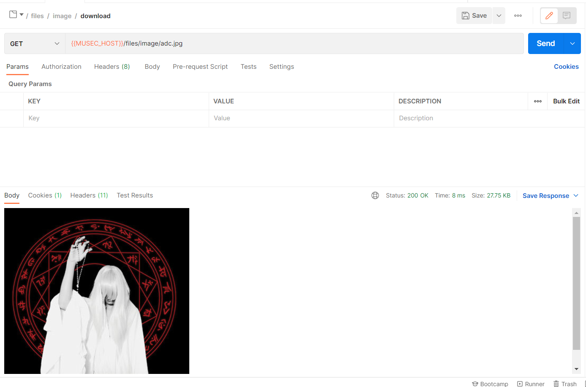
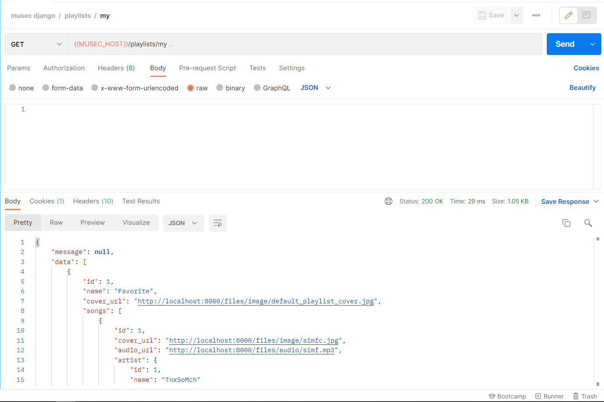
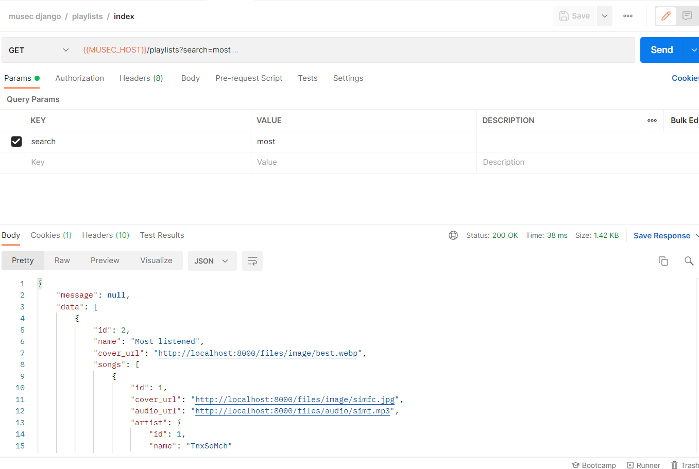

Реализация простого сайта средствами Django
Цель: овладеть практическими навыками реализации серверной части (backend) приложений средствами Django REST framework.
Текст работы
Музыкальный плеер
Модели
class User(models.Model):
email = models.EmailField(max_length=255, blank=False, null=False, unique=True)
password = models.CharField(max_length=255, blank=False, null=False)
@property
def favorite_playlist(self):
return self.playlists.first()
# profile
# api_tokens
# playlists
class UserProfile(models.Model):
first_name = models.CharField(max_length=255, blank=False, null=False)
last_name = models.CharField(max_length=255, blank=False, null=False)
patronymic = models.CharField(max_length=255, blank=True, null=True)
user = models.OneToOneField('User', on_delete=models.CASCADE, related_name='profile')
class ApiToken(models.Model):
token = models.CharField(max_length=255, blank=False, null=False, unique=True)
user = models.ForeignKey('User', on_delete=models.CASCADE, related_name='api_tokens')
###################
class FileType(models.TextChoices):
AUDIO = 'audio', 'audio'
VIDEO = 'video', 'video'
IMAGE = 'image', 'image'
class DefaultFilePath(models.TextChoices):
FAVORITE_PLAYLIST_COVER = 'storage/default_playlist_cover.jpg', 'storage/default_playlist_cover.jpg'
class File(models.Model):
file = models.FileField(upload_to='storage/')
type = models.CharField(
max_length=5,
choices=FileType.choices
)
@property
def filename(self):
return str(self.file).split('storage/')[1]
# path = models.CharField(max_length=255)
# extension = models.CharField(max_length=255)
class Artist(models.Model):
name = models.CharField(max_length=255)
avatar = models.ForeignKey(File, on_delete=models.SET_NULL, null=True, related_name='+')
# songs
# albums
class Song(models.Model):
artist = models.ForeignKey(Artist, on_delete=models.RESTRICT, null=True, related_name='songs')
audio = models.ForeignKey(File, on_delete=models.RESTRICT, null=False, related_name='+')
cover = models.ForeignKey(File, on_delete=models.SET_NULL, null=True, related_name='+')
name = models.CharField(max_length=255)
@property
def cover_url(self):
return settings.APP_URL + reverse('image.download', kwargs={'filename': self.cover.filename})
@property
def audio_url(self):
return settings.APP_URL + reverse('audio.download', kwargs={'filename': self.audio.filename})
class Playlist(models.Model):
name = models.CharField(max_length=255)
cover = models.ForeignKey(File, on_delete=models.SET_NULL, null=True, related_name='+')
is_public = models.BooleanField(default=False)
user = models.ForeignKey(User, on_delete=models.SET_NULL, null=True, related_name='playlists')
songs = models.ManyToManyField(Song)
@property
def cover_url(self):
return settings.APP_URL + reverse('image.download', kwargs={'filename': self.cover.filename})
@staticmethod
def create_favorite_playlist_for_user(user):
cover = File.objects.filter(file=DefaultFilePath.FAVORITE_PLAYLIST_COVER).get()
playlist = Playlist(
name='Favorite',
cover=cover,
is_public=False,
user=user
)
playlist.save()
class Album(models.Model):
name = models.CharField(max_length=100)
cover = models.ForeignKey(File, on_delete=models.SET_NULL, null=True, related_name='+')
artist = models.ForeignKey(Artist, on_delete=models.RESTRICT)
songs = models.ManyToManyField(Song)
Были созданы модели Пользователя и Токена для авторизации. Так же модели Файл, Тип файла, Исполнитель, Песня, Плейлист, Альбом.
Маршруты приложения urls.py
from django.urls import path
from musec_app.views import auth
from musec_app.views import user
from musec_app.views import songs
from musec_app.views import files
from musec_app.views import playlists
urlpatterns = [
# Auth
path('register', auth.register, name='auth.register'),
path('login', auth.login, name='auth.login'),
path('logout', auth.logout, name='auth.logout'),
# User
path('me', user.me, name='user.me'),
# Songs
path('songs', songs.index, name='songs.index'),
path('songs/<int:song_id>/favorite', songs.toggle_favorite, name='songs.favorite'),
path('songs/upload', songs.store, name='songs.store'), # test
# Playlists
path('playlists', playlists.index, name='playlists.index'),
path('playlists/my', playlists.my, name='playlists.my'),
# Files
path('files/audio/<str:filename>', files.download_audio, name='audio.download'),
path('files/image/<str:filename>', files.download_image, name='image.download'),
]
Маршруты разбиты по логическим группам: маршруты для аутентификации, маршруты для работы с песнями, плейлистами и файлами.
serializers.py
Был реализован API с помощью Django serializers для валидации http-запросов и форматирования http-ответов
from rest_framework import serializers
from musec_app.models import File, Song
class ProfileSerializer(serializers.Serializer):
id = serializers.IntegerField(label='id', read_only=True)
first_name = serializers.CharField(max_length=255)
last_name = serializers.CharField(max_length=255)
patronymic = serializers.CharField(max_length=255)
class UserSerializer(serializers.Serializer):
id = serializers.IntegerField(label='id', read_only=True)
email = serializers.EmailField(max_length=255)
password = serializers.CharField(max_length=255, write_only=True)
first_name = serializers.CharField(max_length=255, write_only=True)
last_name = serializers.CharField(max_length=255, write_only=True)
patronymic = serializers.CharField(max_length=255, write_only=True, allow_blank=True, allow_null=True)
profile = ProfileSerializer(read_only=True)
class UserAuthSerializer(serializers.Serializer):
id = serializers.IntegerField(label='id', read_only=True)
email = serializers.EmailField(max_length=255)
password = serializers.CharField(max_length=255, write_only=True)
class TokenSerializer(serializers.Serializer):
token = serializers.CharField()
class ArtistSerializer(serializers.Serializer):
id = serializers.IntegerField(label='id', read_only=True)
name = serializers.CharField(max_length=255)
# avatar_url = serializers.CharField(max_length=255)
class FileSerializer(serializers.ModelSerializer):
class Meta:
model = File
fields = ['id', 'file']
class SongSerializer(serializers.Serializer):
id = serializers.IntegerField(label='id', read_only=True)
cover_url = serializers.ReadOnlyField()
audio_url = serializers.ReadOnlyField()
artist = ArtistSerializer(read_only=True)
name = serializers.CharField(max_length=255)
artist_id = serializers.IntegerField(write_only=True)
audio = serializers.FileField(write_only=True)
cover = serializers.FileField(write_only=True)
class PlaylistSerializer(serializers.Serializer):
id = serializers.IntegerField(label='id', read_only=True)
name = serializers.CharField(max_length=255)
cover_url = serializers.ReadOnlyField()
songs = SongSerializer(read_only=True, many=True)
Контроллеры приложения
songs.py
from django.utils.datastructures import MultiValueDictKeyError
from rest_framework.decorators import api_view, authentication_classes, parser_classes
from rest_framework.parsers import MultiPartParser
from musec_app.auth.authentication import AppTokenAuthentication
from musec_app.responses import api_response
from musec_app.serializers import UserSerializer, SongSerializer, FileSerializer
from musec_app.models import Song, File, FileType
@api_view(['GET'])
@authentication_classes([AppTokenAuthentication])
def index(request):
filters = {}
try:
filters['name__icontains'] = request.GET['search']
except MultiValueDictKeyError:
pass
songs = Song.objects.filter(**filters).all()
return api_response.payload(SongSerializer(songs, many=True).data)
@api_view(['POST'])
@authentication_classes([AppTokenAuthentication])
@parser_classes([MultiPartParser])
def store(request):
serializer = SongSerializer(data=request.data)
if not serializer.is_valid():
return api_response.validation_error(serializer.errors)
data = serializer.validated_data
audio = File(
file=data['audio'],
type=FileType.AUDIO
)
audio.save()
cover = File(
file=data['cover'],
type=FileType.IMAGE
)
cover.save()
song_data = {
'name': data['name'],
'artist_id': data['artist_id'],
'audio': audio,
'cover': cover,
}
song = Song(**song_data)
song.save()
return api_response.success('Song successfully created')
@api_view(['POST'])
@authentication_classes([AppTokenAuthentication])
def toggle_favorite(request, song_id):
song = Song.objects.filter(id=song_id).get()
if not song:
return api_response.not_found('Song was not found.')
favorite_playlist = request.user.favorite_playlist
if favorite_playlist.songs.filter(id=song_id).all().first():
# already liked
favorite_playlist.songs.remove(song)
else:
favorite_playlist.songs.add(song)
return api_response.success()
playlists.py
from rest_framework.decorators import api_view, authentication_classes
from musec_app.auth.authentication import AppTokenAuthentication
from musec_app.responses import api_response
from musec_app.serializers import PlaylistSerializer
from musec_app.models import Playlist
from django.utils.datastructures import MultiValueDictKeyError
@api_view(['GET'])
@authentication_classes([AppTokenAuthentication])
def my(request):
playlists = Playlist.objects.filter(user_id=request.user.id, is_public=False).all()
return api_response.payload(PlaylistSerializer(playlists, many=True).data)
@api_view(['GET'])
@authentication_classes([AppTokenAuthentication])
def index(request):
filters = {
'user_id': None,
'is_public': True,
}
try:
filters['name__icontains'] = request.GET['search']
except MultiValueDictKeyError:
pass
playlists = Playlist.objects.filter(**filters).all()
return api_response.payload(PlaylistSerializer(playlists, many=True).data)
files.py
from rest_framework.decorators import api_view
from musec_app.models import File
from musec_app.responses import api_response
import os
from django.http import HttpResponse
from django.conf import settings
@api_view(['GET'])
def download_audio(_, filename):
return get_response('audio/mpeg', filename)
@api_view(['GET'])
def download_image(_, filename):
return get_response('image/png', filename)
def get_response(content_type, filename):
filename = 'storage/' + filename
file = File.objects.filter(file=filename).all().first()
if not file:
return api_response.not_found()
full_path = os.path.join(settings.MEDIA_ROOT, filename)
with open(full_path, 'rb') as fh:
response = HttpResponse(fh.read(), content_type=content_type)
response['Content-Disposition'] = 'inline; filename=' + os.path.basename(full_path)
return response
user.py
from rest_framework.decorators import api_view, authentication_classes
from musec_app.auth.authentication import AppTokenAuthentication
from musec_app.responses import api_response
from musec_app.serializers import UserSerializer
@api_view(['GET'])
@authentication_classes([AppTokenAuthentication])
def me(request):
return api_response.payload(UserSerializer(request.user, context={'profile': True}).data)
auth.py
import string
import random
from rest_framework.decorators import api_view, authentication_classes
from musec_app.serializers import UserSerializer, UserAuthSerializer, TokenSerializer
from musec_app.models import User, ApiToken, UserProfile, Playlist
from musec_app.responses import api_response
from musec_app.auth.authentication import AppTokenAuthentication
from django.contrib.auth.hashers import PBKDF2SHA1PasswordHasher as PasswordHasher
@api_view(['POST'])
def register(request):
serializer = UserSerializer(data=request.data)
if not serializer.is_valid():
return api_response.validation_error(serializer.errors)
data = serializer.validated_data
if User.objects.filter(email=data['email']).count() > 0:
return api_response.error('The user with given email is already registered', 422)
hasher = PasswordHasher()
user = User.objects.create(email=data['email'], password=hasher.encode(data['password'], hasher.salt()))
user.save()
profile = UserProfile(
first_name=data['first_name'],
last_name=data['last_name'],
patronymic=data['patronymic'],
user=user
)
profile.save()
Playlist.create_favorite_playlist_for_user(user)
return api_response.payload(UserSerializer(user).data)
@api_view(['POST'])
def login(request):
serializer = UserAuthSerializer(data=request.data)
if not serializer.is_valid():
return api_response.validation_error(serializer.errors)
email = serializer.validated_data['email']
password = serializer.validated_data['password']
user = User.objects.filter(email=email).first()
if not user:
return api_response.not_found('User not found')
hasher = PasswordHasher()
if not hasher.verify(password, user.password):
return api_response.unauthenticated()
source = string.ascii_letters + string.digits
token = ''.join((random.choice(source) for _ in range(128)))
api_token = ApiToken(token=token, user=user)
api_token.save()
response = api_response.payload(TokenSerializer({'token': token}).data)
response.set_cookie(
key='api_token',
value=token,
httponly=True
)
return response
@api_view(['POST'])
@authentication_classes([AppTokenAuthentication])
def logout(request):
request.auth.delete()
return api_response.success('Successfully logged out.')
api_response.py
from django.http import JsonResponse
def success(message='Success'):
return JsonResponse(
data=format_payload(message),
status=200
)
def payload(data):
return JsonResponse(
data=format_payload(data=data),
status=200
)
# Errors
def unauthenticated():
return JsonResponse(
data=format_payload('Invalid credentials'),
status=401
)
def validation_error(errors, message='Validation error'):
return JsonResponse(
data=format_payload(message, None, errors),
status=422
)
def not_found(message='Not found'):
return JsonResponse(
data=format_payload(message),
status=404,
)
def error(message='Error', status=400):
return JsonResponse(
data=format_payload(message),
status=status
)
# Internal
def format_payload(message=None, data=None, errors=None):
return {
'message': message,
'data': data if data else [],
'errors': errors if errors else [],
}
authentication.py
from rest_framework.authentication import BaseAuthentication, get_authorization_header
from django.core.exceptions import ObjectDoesNotExist
from rest_framework import exceptions
from musec_app.models import User, ApiToken
class AppTokenAuthentication(BaseAuthentication):
def authenticate(self, request):
try:
token = request.COOKIES['api_token']
api_token = ApiToken.objects.filter(token=token).get()
except KeyError:
raise exceptions.AuthenticationFailed('Unauthenticated')
except ObjectDoesNotExist:
raise exceptions.AuthenticationFailed('Unauthenticated')
return api_token.user, api_token
def authenticate_header(self, request):
return 'Token'
Обзор API
AUTH
POST /register

POST /login

POST /logout

User
GET /me

Songs
GET /songs

POST /songs/<id>/favorite

POST /songs/upload

Files/Audio
GET /files/audio/<path>

Files/Image
GET /files/image/<path>

Playlists
GET /playlists/my

GET /playlists?search=q

Заключение
В процессе лабораторной работы был создан API приложения для поиска и прослушиваня аудиодорожек, с возможностью регистрации, добавления дорожек в понравившиеся, составления плейлистов